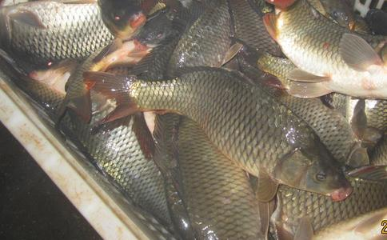

养殖业是个杀业深重的行业,比如放养鱼苗时清塘要杀死很多野杂鱼、搞繁殖时一个技术偏差和管理疏忽,几亿几十亿生命就没了,还有很多很多......
杭州的运河由于水路运输繁忙,来往船只把水搅得很混,而且有些船只漏油使水面漂浮着机油、柴油等,近十几年来由于沿岸厂家排放增多,大小水系富营养化,水浮莲到处蔓延,导致水质变坏加剧。从
南方的鲫鱼一般在3月底--4月底产卵,鲤鱼稍晚半个月,北京可能要推迟半个月即在4月中旬--5月中旬产卵,鲤鱼在5月中旬产卵,放生时最好放在大一点的水桶里运输(不宜干运、不可太拥挤),即将产卵的鲫鱼、鲤鱼在操作过程中要格外小心,以保母子平安。北京的夏天放泥鳅和螺蛳,若运输时间在2小时之内的,可以干运(保持一定的湿润度,不放水,防止暴晒即可)。
淡水水产品中除了:非洲鲫鱼、笋壳鱼、罗氏沼虾等几个个别品种外,一般北方市场上卖的都可以放生,需要注意的问题很多:1、观察鱼的活力;2、观察鱼有无损伤;3、注意放生途中运输方法,不宜高密度运输,如冬天放鲫鱼、鲤鱼、黑鱼、鳝鱼、泥鳅、螺蛳、河蚌、乌龟、甲鱼等生命力强的种类,路程在2-3小时内可以干运,只要保持一定的湿润度即可,除此外的鱼类放生途中需带水运输,有条件最好放置增氧设备;4、选择风和日丽的晴暖天气;5、避开有污染的地方;6、带上一个水桶,在药店里买一些高锰酸钾,放生前能给鱼浴上十分钟,消除水霉病,提高存活率。
冬天看见牛蛙不放生有点违缘,但牛蛙在冬眠期内最好不要惊动,外界温度在0度以下,牛蛙直接放在外界自然水域中,可能会冻死,水结冰会导致牛蛙体液和血液结冰。外界温度10度以上冬眠醒来,此时放生合适。运输:干运,不宜堆放挤压,以免造成皮肤伤害,牛蛙很易得烂皮病,所以放生时最好用高锰酸钾消毒。
1.黄膳放在河里会淹死吗,我听说它的腮退化了,要在不能淹没的它的水里。(这个问题就好像一个会游泳的人掉进太平洋里,最终会精疲力竭而沉入海底,像鳝鱼、河蟹等不善游泳的水产品,放生时最好放在有水草、乱石等地方,以便它栖息。有些人会有这样的经历,把河蟹、鳝鱼等放在光滑的水桶里,盛上大半桶水,过了几个小时结果发现河蟹、鳝鱼死了,原因是没地方附着,最终力气耗尽而淹死,当然也有的是缺氧而死)
2. 鱼籽放在河里会被别的鱼吃掉吗,会孵出鱼来吗?(鱼类是体外受精的,只有受精卵才能孵出小鱼来,附着在水草、乱石等地方的受精卵,会被其它小型野杂鱼吃掉一部分,但因为它粘性好,大部分都剩下来)
3.黑鱼是吃活鱼还是死鱼,会把一起放生的鲫鱼吃了吗?(人工养殖的黑鱼已经被驯化,所以是吃死鱼的,放生后,若周边饵料没有,它会恢复原始的野性状态,吃活鱼)
4.螺狮和泥鳅是不是哪里都能活?(螺蛳、泥鳅生命力强,适应性好,很多环境下都能存活,但也要注意以下几个问题:冬天不能被冰雪冻着;夏天不能闷在容器里或直接被太阳长时间暴晒;污染严重的地方不易存活)
5.在上海的河里,一般能放些什么水产比较易活?(上海的市河里,富营养化严重,最好放一些花鲢、白鲢、螺蛳、河蚌,这四个种类都是净化水质的,即放了生又保护了环境,功德无量)
放生大肚子母鱼搭配几条雄鱼,淡水鱼是体外受精,若没有雄鱼,母鱼卵子可能会流产或被自身吸收,当然巧的话放生处原来有雄鱼,那就不用担心了(但人为刻意增加雄鱼,又有为鱼苗的
淡水鱼类都是体外受精:雄鱼一定要看见母鱼才能发情,才能射精,看见鱼子是不会发情的,就像男人看见少妇起淫心,看见少妇的子女是不会起淫心一样。鱼肚子里的鱼子被取出一旦放到水里,快则几秒慢则90秒之内就会迅速膨胀,卵壁会增厚关闭,到时即使有精子也钻不进去,更何况根本没有精子。未受精的鱼子,一般在一个
放生就是“放心”,放出自己那个慈悲心、平等心,所以对放鱼子的善友我还是赞叹的,至少心是善的,从但做好事莫问前程的角度来讲,
冬天北方水大部分结冰破冰放生的不少,请问最适合破冰放生的物种有哪些?(螺蛳、河蚌、泥鳅是底栖动物,河底温度相对高一些,放了之后冻不着,而且它们耐缺氧强,可以放一些.)
黄河里放什么比较好(黄河鲤鱼、鲫鱼、鲶鱼、汪丁、白鲢、花鲢、草鱼、青鱼等都可以,泥鳅也可以。)
1,那些在池塘和水库里养大的鲫鱼能适应长江的水质吗?(能适应,中华大地的淡水鱼类,大多数出自长江水系的,追本溯源,认祖归宗总没错)
2,虽然江水还算干净,可是长江又广又深,风浪较大,我听说鲫鱼喜静不喜动,鲫鱼能适应长江的风浪吗?(海阔任鱼跃,长江深广不会障碍鱼类生存,有些鱼类喜静水环境中生存,也不会受影响,因为长江有很多支流和湖泊,那里相对安静些,鱼类会各自找到对自己有利的生活环境。)
3,在池塘里定时被人工喂食的鲫鱼,在一个新的野生环境——长江中能自己找到食物以存活下来吗?(这个是所有生物的原始本能,不会退化,就像一个人,原来在上班,吃喝不愁,过得很安逸,突然有一天失业了,自力更生,照样能活。)
4,每次放生十几条鲫鱼,多数钻进江里就不见了,但总有一两天似乎很不适应,总是在水面游来游去,它们适应长江大概需要多少时间呢?(长时间在水面上有来游去的鱼是受伤严重的鱼,有些过几天能恢复,有些则不能,正常的鱼会很快适应环境潜入水底)
5,鲫鱼平时在长江的什么水层?容易被来往船只的螺旋桨伤害到吗?(鲫鱼个体小,生活在中下层水域,一般不会被螺旋桨伤害到。 )
6,我一个黑塑料袋装七八条鲫鱼,加了点水(加不满),在春夏秋冬大概各能存活多长时间?(这个很难量化,要看鲫鱼的受伤程度,受伤轻微的,冬天可以干装,一般运输2个小时以内没问题,春夏秋三季水运,最好打个氧气包,存活时间可以延长一些,若不打氧气包水运,尽量用桶或盆装,成活率高些。)
7,听鱼贩告诉我,能不加水就别加水,否则水加不满,鱼在袋子里和水一晃一晃反而容易死亡,有这一说吗?(这个指冬天 )
8,有时迫不得已运输时间耽误长了,看到袋子里的鲫鱼吐了许多泡沫,可是我确定放在长江里的时候这些鲫鱼都是活的,而且能游,那么它们会由于在运输途中缺氧缺水而在放到长江后延迟死亡吗?(不会的,放下去活就没问题了。后面若死亡,不会是缺氧原因,而是捕捞、运输、贩卖过程中鱼表面受伤掉鳞,放生后有些会感染水霉病,半个月或一个月后死去。所以放生时最好去药店买一些高锰酸钾,放之前化开让鱼浴上5分钟再放。)
10,鲫鱼在长江中的天敌主要是什么鱼?(从放生角度来讲我们就不用考虑这个问题了,但从专业角度也可了解一下:凡体型比自己大的肉食鱼类都是自己的天敌,如
11,放生时经常看到那些捕鱼船在作业,听钓鱼的人讲平时很少能钓到鲫鱼这样的鱼,可那些渔民所使用的“天钩”“地笼”还有电船电鱼杀伤力极强,师兄还知道有多厉害?(天钩我不清楚,地笼是迷宫原理,让鱼晕头转向而陷入死胡同被捕起,捕获率很高;电力捕鱼一般在电极的1-2立方水域内有效,但那个电捕船是移动的,所以捕获率也很高)
一般来讲:平常季节,鱼在被放生后,由于车马劳顿、惊恐、损伤等因素,一两天时间内是不会吃食的,有的时间更长,我们以前在养殖过程中,刚刚放养的鱼,起码是2天后投食,有的更长(春夏季节),若在冬天,要过冬眠才开食,时间可能要几个月。
对付钓鱼者的办法最好去那些钓鱼论坛看看,他们头痛什么、讨厌什么?我一次看到一个垂钓者发帖:垂钓时最讨厌麦穗鱼(见图),因为麦穗鱼贪吃,钓钩上的诱饵一下子就吃掉了,但个体小嘴巴更小,不易被钓起,所以在垂钓者经常出没的地方,多放一些麦穗鱼,给他们制造麻烦。
1,电视上常讲人工饲养长大的狮子老虎如果不经过野生训练就放生到大自然是很难存活的,可师兄你讲放生人工养殖的鱼类则不存在这个问题,难道是鱼在水中比较容易觅食,远没有狮子老虎捕食难度大?(1、鱼类和老虎狮子没有可比性;2、鱼类在11月-下一年的3月近4个月的时间是不吃食的,杂食鱼类食性范围广,平常季节不投食也不会饿死,只是生长慢或停止生长,肉食鱼类如桂花鱼、黑鱼等不投食也能熬很长时间,老虎、狮子几天没吃的就饿死了;3、鱼在水中比老虎在林中找吃的容易多了。)
2,高锰酸钾和水的配比大概如何,使用时需要注意什么呢?能用其他消毒水消毒液替代吗?(可以用3%—5%的食盐水溶液浸泡放生鱼8—10分钟,更简单。)
3,师兄还能推荐我其他类似鲫鱼的鱼类呢,生存能力强,杂食性,适合四季在长江放生。(鲤鱼、鲶鱼、青鱼、汪丁、鮰鱼等.)
4.湖蟹适何放在钱塘江里吗?水产的老板说可以的,尤其带仔的母蟹需要稍咸一点的淡水把仔冲下来,有这个
5钱塘江适何放黑鱼吗?因为有一次放生后,一个游艇上的工作人员说:我们有几次放生后,有好多黑鱼都游到岸边,被其他的人捡走。(由于黑鱼个性凶猛,西溪湿地、西湖有规定不准放。所以我们在放生过程中,遵守规定,想放在钱江。)(可能是钱塘江涨潮时,江里海水成分增多,盐度加大,黑鱼是淡水鱼类,一旦进入咸水中,渗透压增大适应不了导致死亡。)
6.鲢鱼、鳊鱼、胖头鱼在以往放生的经验中,它们很不经折腾,经常在到达放生目的地时,他们已经翻白了。在买鱼时,运输途中需要注意些什么?(这个三种鱼本身就经不起折腾,放它们是最好装的器皿大一些而且要硬器皿,水要多一些,注意鱼水比率,水多鱼少,有条件最好放上增氧设备。)
7.鲢鱼、鳊鱼、胖头鱼、汪刺鱼、鲶鱼、鮰鱼哪些生命力较强,哪些适合钱塘江,哪些适合西溪湿地?(钱塘江放生最好尽量往上游去,下游接近海,咸水多不易活,生命力强的鲤鱼、鲫鱼、鲶鱼等,西溪湿地基本上淡水鱼类都可放。)
8.如何区分外塘甲鱼,温室甲鱼?如何区分生命力强的甲鱼,是外壳光亮,肚皮白嫩,裙带无伤吗?适何钱江吗?
(1)挑选一些无伤巴、活力强的甲鱼,有伤疤的甲鱼放生后易生水霉病,到天暖水温上升时会慢慢死亡;观察是否活力强:可以把甲鱼翻过来肚子朝天,若能自己翻过来,就是有活力的,翻过来的速度越快活力越强(当然和当下的温度也有关系,若在雪地里,活力最强的甲鱼也会翻转很慢甚至不动)。
(2)人工养殖甲鱼要区分是温室甲鱼还是外塘甲鱼,若温室甲鱼,由于温室环境都在28度以上,而冬天外界温度只有几度甚至零度,温差大,放生后极难成活,外塘甲鱼则问题不大(但也最好避免冰天雪地的气候),但放生时最好挑选风和日丽气温度高一点的日子,如何区分是温室甲鱼还是外塘甲鱼:最简单明了的方法是看爪子,爪子尖锐的是外塘的,爪子粗钝的是温室的(水泥池磨的),还有就是看身上的新老伤疤,温室甲鱼是高密度养殖的,身上的伤疤肯定多,还有就是光洁度高,裙边舒展的是外塘甲鱼。
(3)放生甲鱼时,到药店去买一点高锰酸钾,用水化开,甲鱼先在里面泡上10分钟,防止水霉病的滋生,可以提高存活率。
(4)西溪湿地是甲鱼生活的好地方
9.放河虾的时候,都会打上氧气,河虾的成活率高不?(打上氧气的话成活率应该不错,冬天若时间快,可以干运)
螺蛳适应性强,一般河流都能生存,螺蛳吸食河底的腐蚀有机质,水流急的河流腐蚀质少,螺蛳长得瘦,但能生存。任何一条深的河流都有浅的岸滩,螺蛳会移动,所以河流深浅也不会影响它生存。
江南梅雨季节和夏季气温高、湿度也大,运输是个难题,若用氧气包运输,数量运不大,氧气包被太阳直射时间过长,里面温度容易升高导致鱼类死亡。这个季节放生,最好用大桶和大盆装鱼,放置增氧设备(家用小型增氧设备鱼具商店有的卖,若经常放生不妨添置一副,价格也不很大:电瓶、气泵、气管、气头),水中放一些食盐(比率:一吨水放一斤盐)可以增加成活率。
田螺喜欢生活在浅水区,水流静止的地方,它们以吸食河底的腐蚀有机质为生,最宜生活的环境是稻田、沼泽、鱼塘、浅滩,至于江、湖、河、水库并非最宜的生活环境,但存活是没问题的。
河蟹、鳝鱼、小龙虾、牛蛙、田螺最宜的生活环境是沼泽和湖泊,当然开了冻的松花江也能放,由他们自己去选择合适的生活环境。林蛙对生活环境要求高,最好还是放回森林里去。
从严格意义上说被放生的母鱼都是鱼妈妈,有的季节看见鱼的肚子不大,是因为卵还在发育初期。比如鲤鱼:一般5月为其性腺成熟和产卵的时期。产卵后的第Ⅵ期卵巢到7月份吸收退化到第I期,此后逐渐发育到11月份进入第Ⅳ期,并以此期越冬,第二年3-4月份,遇到适宜的环境条件,卵巢即迅速成熟很快发育到第V期。
鲤鱼:南方地区的珠江流域产卵盛期为2-3月;长江流域为4-5月:黄河流域5-6月;东北地区为6-7月,产卵期一般可持续2个月左右。鲫鱼稍早一点,泥鳅稍晚一点。
掉鳞的鱼身上会发炎的。如何救治它们? 可用3%食盐水浸洗,5～10分钟,或用百万分之二(2ppm)的高锰酸钾溶液加l%食盐浸泡20～30分钟 。(100斤水加2-3斤盐化开泡5-10分钟).对不善游泳的水生动物最好放在湖里:螺蛳、河蚌、泥鳅、鳝鱼、蛙类、虾蟹类、龟鳖类等,除此之外湖里江里皆可。
导致被放生鱼类死亡的因素很多:捕捞、运输、暂养、转卖、放生等环节的物理损伤和精神折磨。目前季节是鲤鱼、鲫鱼繁殖季节,经历上述环节,最易死亡。
放生水族对改善江湖水质有益,但如果密度过高,会增加湖水的肥度,说不定会起反作用。看你介绍,此湖为死水湖,水草很多,不知这个水草是水面上:水花生、水浮莲,还是从水底长出来的竹节草、苦草之类,若是前者,水草多了会败坏水质,若是后者,水草越多,水越清澈。对改善水质最有效果的水族是:螺蛳、河蚌、白鲢、花鲢,螺蛳、河蚌是水底清道夫;花白鲢专食水中蓝绿藻和浮游生物,净化水质功不可没。